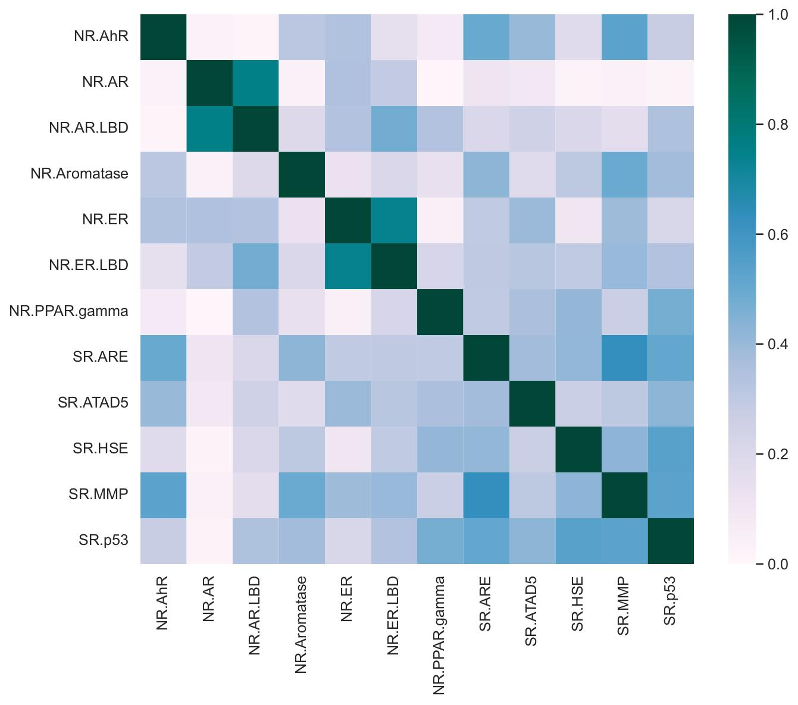
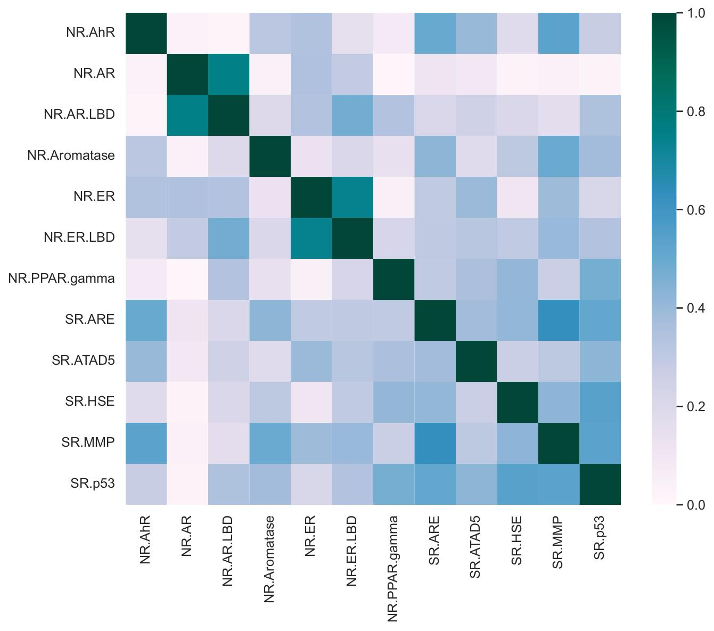
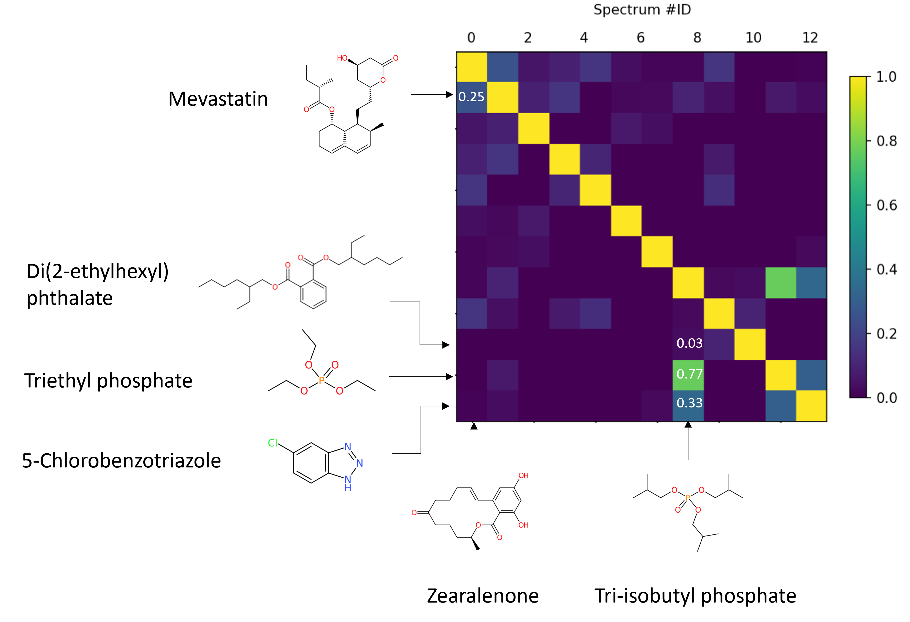

Toxicity dataset
The toxicity data had some association between endpoints as illustrated in this phi coefficient matrix. The lowest phi coefficient was for (NR.AR, NR.PPAR.gamma) and the highest for 0.756 (NR.AR, NR.AR.LBD).
The widespread exposure to chemicals has raised concerns about their toxicity impact on public health and the environment. Identifying and quantifying these chemicals in complex samples is not always possible, making the assessment of their toxicities difficult.
In an effort to quickly screen chemicals for potential risks to human health, this study aims to predict toxicities based on tandem mass spectrometry MS2 data. To achieve this goal, endocrine-disrupting activity data and other relevant human endpoints from the Tox21 Challenge were collected and combined with mass spectra from Mass Bank Europe. A k-nearest neighbors (k-NN) and a spectra network-based algorithm were implemented to predict the activity from MS2 mass spectra. For k-NN, 5-fold cross-validation, the highest recall and precision were 47.1% and 44.4% (both for NR.AR), respectively. The implementation of a spectral similarity network enhanced the recall and precision to 81.8% and 75.0% (both for NR.AR), respectively. The spectral networks showed active clusters for the NR.AR, NR.ER, NR.AR.LBD, and NR.ER.LBD endpoints.
The approach was applied to retrospective analysis of MS2 mass spectra of a wastewater sample, showing potential for toxicity alerts. The predictive capabilities of the model could benefit from feature selection techniques, network optimization, and integration with datasets from other domains.
The toxicity data had some association between endpoints as illustrated in this phi coefficient matrix. The lowest phi coefficient was for (NR.AR, NR.PPAR.gamma) and the highest for 0.756 (NR.AR, NR.AR.LBD).
The cosine similarity metrics showed some groups of chemicals with high similarity values which later will show up as clusters in a network.
We can adapt the network according to the cosine similarity threshold. Use the slider to change the cosine threshold.
Using the network, you can predict the toxicity of unknow mass spectra (white nodes). In this example, red nodes are active and the green ones are inactive to the NR-AR endpoint. The (+) sign means predicted as active and (-) as inactive.
We also applied the network to the analysis of a real sample. The prediction model pinpointed mass spectra featues that later were examined for identification revealing some active substances.
This approach shows potential for the automated screening of mass spectra features in non-targeted analysis and the prioritization of samples.
We hope that further expansion of mass spectra databases, development of algorithms, and the integration of multi-domain databases could increase performance and chemical space for a more feasible study of contaminated areas.
Similar network approaches to this one could be beneficial in other fields as well, for example, in the pharmacognosy of bioactive compounds from natural sources.
There are many works that inspired this project, some of them are:
GNPS is a community-based platform that implements a similar molecular networking approach used in this project for the identification of MS/MS spectra.
Detective-QSAR predicts physicochemical properties and toxicities based on GC-MS data and the XGBoost Machine Learning method.
MS2Tox is a Machine Learning Tool for Predicting the Ecotoxicity based on LC-HRMS data and the CompTox database applying a xgbDART method.
News about recent projects in mass spectrometry data analytics can be found on the Kruve Lab website.
@masterthesis{Soto_2023,
title={Automated Prediction of the Endocrine Disruptive Potency of Chemicals detected with LC/ESI/HRMS based on Mass Spectral Networks},
url={https://urn.kb.se/resolve?urn=urn:nbn:se:uu:diva-532906},
author={Soto, Leonardo},
year={2023},
collection={UPKEM E}
}